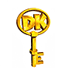
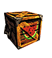
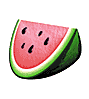
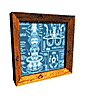

|
|
|||
|  | Boss Keys unlock the cage where K. Lumsy is held. There are eight in all. |  | Melon Crates contain four slices of melons to replenish your life. |
|  | Watermelons measure your life. Each watermelon contains four slices, which can be replaced by grabbing more melon. |  | Blueprints (we're not going to tell you how many there are, but you get them all by defeating Kasplats) |